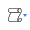
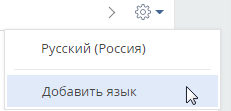
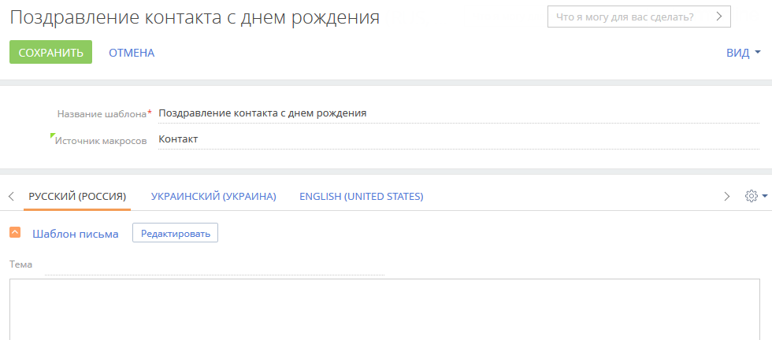

Содержимое сообщений, которые отправляются из Creatio, вы можете сформировать вручную или на основании созданного ранее шаблона, адаптируя его под получателя. Шаблоны удобно использовать для отправки писем в ходе выполнения бизнес-процессов, автоматических уведомлений, а также для быстрых ответов в чатах. Все шаблоны в Creatio настраиваются в разделе Шаблоны сообщений. По умолчанию шаблоны создаются на базовом языке системы (английском). Если вы хотите использовать мультиязычные коммуникации, то начните с настройки шаблона на базовом языке. При последующем добавлении локализаций настройки базового шаблона можно будет скопировать для других языков.
Создать шаблон сообщения
Создать шаблон email
-
Перейдите в рабочее место Студия и откройте Шаблоны сообщений.
-
Нажмите кнопку Добавить и выберите в меню “Шаблон email-сообщения”.
-
На открывшейся странице укажите название шаблона, например “Согласование даты и времени встречи”.
-
Укажите источник макросов, например, “Активность”.
-
На детали Шаблон письма нажмите кнопку Редактировать. Откроется дизайнер контента. По умолчанию шаблоны создаются на базовом языке системы (английском). Если вы хотите использовать мультиязычные коммуникации, то после первичной настройки шаблона необходимо будет добавить в него локализации.
-
В дизайнере контента заполните тему письма.
-
Добавьте в рабочую область элемент Блок.
-
Добавьте в блок элемент Текст.
-
Удалите стандартное наполнение элемента Текст и добавьте текст вашего сообщения.
-
Если необходимо, добавьте макросы с данными отправителя или получателя. Это позволит персонализировать сообщение.
-
Расположите курсор в том месте сообщения, где необходимо вставить макрос.
-
Нажмите 
—> Стандартный макрос.
-
В открывшемся окне выделите необходимый макрос и нажмите Выбрать.
-
-
Сохраните шаблон.
В результате в приложении будет создан новый шаблон email-сообщения “Согласование даты и времени встречи”. Подробнее об использовании шаблонов email-сообщений читайте в статье Отправить письмо по шаблону.
Создать шаблон чата
-
Перейдите в рабочее место Студия и откройте Шаблоны сообщений.
-
Нажмите кнопку Добавить и выберите в меню “Шаблон чата”.
-
На открывшейся странице укажите название шаблона, например “Приветствие”.
-
Убедитесь, что указан источник макросов “Чат”.
-
На детали Шаблон чата введите текст сообщения. Если вы хотите использовать мультиязычные коммуникации, то после первичной настройки шаблона необходимо будет добавить в него локализации.
-
Если необходимо, добавьте макросы с данными отправителя или получателя. Это позволит персонализировать сообщение.
-
Расположите курсор в том месте сообщения, где необходимо вставить макрос.
-
Нажмите —> Стандартный макрос.
-
В открывшемся окне выделите необходимый макрос и нажмите Выбрать.
-
-
Сохраните шаблон.
В результате в приложении будет создан шаблон сообщения для чата. Подробнее об использовании шаблонов в чатах читайте в статье Работа с чатами.
Настроить мультиязычие для шаблона
Отправляйте клиентам сообщения из системы на их языке общения при помощи мультиязычных шаблонов. Функциональность работает:
- в чатах;
- при отправке email по шаблону из панели действий или коммуникационной панели;
- в ходе отправки уведомлений по бизнес-процессам.
Настройка мультиязычных сообщений состоит из нескольких шагов:
-
Настройте языки, которые будут использоваться для общения с клиентами. Подробнее >>>
-
Настройте мультиязычные шаблоны сообщений. Подробнее >>>
Проверка языка шаблона email-сообщения
Чтобы определить язык шаблона email-сообщения, который необходимо отправить клиенту, система проверяет:
-
Проверка выполняется только для email-сообщений отправленных по обращениям. Установлен ли для данного почтового ящика в справочнике Список почтовых ящиков для регистрации обращений признак в поле Всегда использовать язык почтового ящика.
-
Если признак установлен, то адресату будет отправлен шаблон на языке почтового ящика.
-
Если признак не установлен, то выполняются проверки, описанные в следующих шагах.
-
-
Заполнен ли на странице контакта язык общения.
-
Если поле заполнено, то адресату будет отправлен шаблон на его языке общения.
-
Если поле не заполнено, то будет выполнен переход на следующий шаг проверки.
-
-
Указан ли язык почтового ящика.
-
Если язык почтового ящика указан, то адресату будет отправлен шаблон на языке почтового ящика.
-
Если язык почтового ящика не указан, то будет выполнен переход на следующий шаг проверки.
-
-
Заполнена ли системная настройка “Язык сообщений по умолчанию” (“код DefaultMessageLanguage”).
-
Если системная настройка заполнена, то адресату будет отправлено сообщение на языке, установленном в системной настройке.
-
Если системная настройка не заполнена, то адресату будет отправлено шаблон на языке системы по умолчанию.
-
Проверка языка шаблона чата
Чтобы определить язык шаблона чата, система проверяет:
- Заполнен ли на странице контакта язык общения. Язык общения нового контакта заполняется автоматически как язык, указанный в канале чата.
- Если поле заполнено, то контакту будет отправлен шаблон на его языке общения.
- Если поле не заполнено, то будет выполнен переход на следующий шаг проверки.
- Указан ли язык канала чата.
- Если язык указан, то адресату будет отправлено письмо на языке почтового ящика.
- Если язык чата не указан, то будет выполнен переход на следующий шаг проверки.
- Заполнена ли системная настройка “Язык сообщений по умолчанию” (“код DefaultMessageLanguage”).
- Если системная настройка заполнена, то адресату будет отправлено сообщение на языке, установленном в системной настройке.
- Если системная настройка не заполнена, то адресату будет отправлено письмо на языке системы по умолчанию.
Настроить языки общения
Язык общения указывается на странице контакта в разделе Контакты. Это язык, на котором контакту будут отправляться email-уведомления. Он не зависит от настроенных языков интерфейса, в которых работают пользователи, или языка системы по умолчанию.
Для указания языка общения и формирования мультиязычных шаблонов используются значения справочника Языки общения:
-
Для выбора на странице контакта в разделе Контакты доступны только те языки, для которых в справочнике Языки общения установлен признак Используется.
-
Для использования в шаблонах сообщений по умолчанию доступны все языки, перечисленные в справочнике. Если в шаблон добавить неактивный язык, то для него в справочнике Языки общения будет установлен признак Используется.
Деактивированный язык станет недоступен для выбора в меню поля Язык общения на странице контакта, но будет отображаться, если был указан ранее. Вкладка с текстом чата или письма на таком языке будет скрыта из шаблона, но сообщения будут отправляться, если у контакта на странице указан этот язык.
В случае повторной активации языка все ранее созданные для него шаблоны снова отобразятся в справочнике.
Создать мультиязычный шаблон сообщения
Вы можете настроить мультиязычные шаблоны для писем и чатов в справочнике Шаблоны сообщений.
Чтобы создать мультиязычный шаблон:
-
Перейдите в рабочее место Студия и откройте Шаблоны сообщений.
-
Откройте шаблон, который необходимо локализировать.
-
Нажмите кнопку
 . В меню отобразятся все языки, для которых в справочнике Языки общения установлен признак Используется. Выберите язык, который необходимо добавить в шаблон.
. В меню отобразятся все языки, для которых в справочнике Языки общения установлен признак Используется. Выберите язык, который необходимо добавить в шаблон.Если в системе еще нет активных языков или вы хотите добавить вкладку на ранее не активированном языке, то выберите в меню пункт Добавить язык (Рис. 1) и в открывшемся окне выберите язык, который хотите использовать в шаблоне. Для выбранного языка будет автоматически установлен признак Используется.
Рис. 1 — Добавление в шаблон дополнительных языков -
После выбора языка система предложит скопировать на добавляемую вкладку наполнение существующего шаблона. Выберите эту возможность, если необходимо использовать настроенную верстку для добавленной локализации.
-
Если необходимо добавить в шаблон несколько языков, то повторите шаги 3 и 4 для каждой локализации. В результате на странице шаблона появится несколько вкладок для формирования сообщений на выбранных языках (Рис. 2).
Рис. 2 — Пример мультиязычного шаблона -
Выберите нужную вкладку и отредактируйте ее содержимое. Аналогичным образом сформируйте сообщения на каждом из выбранных языков.
-
Сохраните изменения.